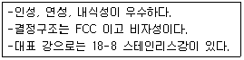
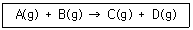
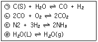
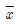
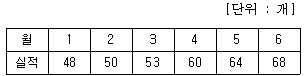

가스기능장 (2014-04-06 기출문제)
1과목: 임의 구분
1. Orifice 유량계는 어떤 원리를 이용한 것인가?
- 베르누이 정리
- 토리첼리 정리
- 플랑크의 법칙
- 보일-샤를의 원리
(정답률: 93%)

2. 밀폐된 용기 중에서 공기의 압력이 15[atm]일 때 N2의 분압은 약 몇 [atm] 인가? (단, 공기 중 질소는 79[%], 산소는 21[%] 존재한다.)
- 7.9
- 9.1
- 11.8
- 12.7
(정답률: 69%)
3. 다음 중 특정고압가스가 아닌 것은?
- 수소
- 산소
- 프로판
- 아세틸렌
(정답률: 74%)
4. 지름이 다른 강관을 직선으로 이음 하는데 주로 사용되는 것은?
- 부싱
- 티
- 크로스
- 엘보
(정답률: 91%)
5. 다음 [보기]에서 설명하는 강(鋼)으로 가장 옳은 것은?

- 구리-아연강(Cu-Zn steel)
- 구리-주석강(Cu-Sn steel)
- 몰리브덴-크롬강(Mo-Cr steel)
- 크롬-니켈강(Cr-Ni steel)
(정답률: 95%)
6. 공기액화 분리장치의 폭발 원인과 대책으로 틀린 것은?
- 공기 취입구에서 아세틸렌이 혼입된다.
- 압축기용 윤활유의 분해에 따라 탄화수소가 생성된다.
- 흡입구 부근에서는 아세틸렌 용접을 금지한다.
- 분리장치는 년 1회 정도 내부를 세척하고 세정액으로는 양질의 광유를 사용한다.
(정답률: 84%)
7. 일산화탄소의 제법에 대한 설명으로 옳은 것은?
- 수소가스 제조 시의 부산물로 제조된다.
- 코크스에 산소를 사용하여 불완전 연소시켜 제조한다.
- 알코올 발효 시의 부산물로 제조된다.
- 석회석의 연소에 의해 생성된 가스를 압축하여 제조한다.
(정답률: 78%)
8. 재충전 금지용기는 그 용기의 안전을 확보하기 위하여 기준에 적합하여야 한다. 그 기준으로 틀린 것은?
- 용기와 용기부속품을 분리할 수 없는 구조일 것
- 최고충전압력[MPa]의 수치와 내용적[L]의 수치를 곱한 값이 100 이하일 것
- 최고충전압력이 22.5[MPa] 이하이고 내용적이 15[L] 이하일 것
- 최고충전압력이 3.5[MPa] 이상인 경우에는 내용적이 5[L] 이하일 것
(정답률: 64%)
9. 냉동배관에서 압축기 다음에 설치하는 유분리기의 분리 방법에 따른 종류가 아닌 것은?
- 전기식
- 원심식
- 가스 충돌식
- 유속 감소식
(정답률: 76%)
10. 공기 중에서 폭발하한계 값이 작은 것부터 큰 순서로 옳게 나열된 것은?
- ㉠ - ㉡ - ㉢ - ㉣
- ㉠ - ㉡ - ㉣ - ㉢
- ㉡ - ㉠ - ㉢ - ㉣
- ㉢ - ㉠ - ㉡ - ㉣
(정답률: 81%)
11. 다음 용어의 정의 중 틀린 것은?
- 저장소라 함은 산업통상자원부령이 정하는 일정량 이상의 고압가스를 용기 또는 저장탱크에 의하여 저장하는 일정한 장소를 말한다.
- 용기라 함은 고압가스를 충전하기 위한 것으로서 이동할 수 없는 것을 말한다.
- 저장탱크라 함은 고압가스를 저장하기 위한 것으로서 일정한 위치에 고정설치된 것을 말한다.
- 냉동기라 함은 고압가스를 사용하여 냉동을 하기위한 기기로서 산업통상자원부령이 정하는 냉동능력 이상인 것을 말한다.
(정답률: 91%)
12. 교축과정에서 일어나는 현상으로 틀린 것은?
- 엔탈피가 증가한다.
- 엔트로피가 증가한다.
- 압력이 감소한다.
- 난류현상이 일어난다.
(정답률: 59%)
13. 암모니아 가스 누출 시험에 사용할 수 없는 것은?
- 염화수소
- 네슬러 시약
- 리트머스 시험지
- 헤라이드 토치
(정답률: 85%)
14. 정전기 재해 방지조치에는 정전기 발생억제, 정전기 완화 촉진, 폭발성가스의 형성방지로 나눌 수 있다. 이 중 정전기 완화를 촉진시켜 정전기를 방지하는 방법이 아닌 것은?
- 접지, 본딩
- 공기 이온화
- 습도 부여
- 유속 제한
(정답률: 79%)
15. 온도 298[K], 부피 0.248[L]의 용기에 메탄 1[mol]을 저장할 때 Van der Waals 식을 이용하여 계산한 압력[bar]은? (단, a = 2.29[L2ㆍbarㆍmol-2], b =0.0428[Lㆍmol-1], R = 0.08314[LㆍbarㆍK-1ㆍmol-1]이다.)
- 8.35
- 83.5
- 835
- 8350
(정답률: 64%)
16. 다음 중 압력이 가장 높은 것은?
- 2000[kgf/m2]
- 20[psi]
- 20000[Pa]
- 30[mH2O]
(정답률: 79%)
17. 산업통상자원부장관은 가스의 수급상 필요하다고 인정되면 도시가스사업자에게 조정을 명령할 수 있다. “조정명령” 사항이 아닌 것은?
- 가스공급 계획의 조정
- 가스요금 등 공급조건의 조정
- 가스공급시설 공사계획의 조정
- 가스사업의 휴지, 폐지, 허가에 대한 조정
(정답률: 93%)
18. 도시가스 공급시설 중 정압기(지)의 기준에 대한 설명으로 옳지 않은 것은?
- 정압기를 설치한 장소는 계기실, 전기실 등과 구분하고 누출된 가스가 계기실 등으로 유입되지 아니하도록 한다.
- 정압기의 입구측, 출구측 및 밸브기지는 최고사용 압력의 1.25배 이상에서 기밀성능을 가지는 것으로 한다.
- 지하에 설치하는 정압기실은 천정, 바닥 및 벽의 두께가 각각 30[cm] 이상의 방수조치를 한 콘크리트로 한다.
- 정압기의 입구에는 수분 및 불순물 제거장치를 설치한다.
(정답률: 85%)
19. 액화석유가스 충전사업자는 수요자의 시설에 대하여 안전점검을 실시하고 안전관리 실시 대장을 작성하여 몇 년간 보존하여야 하는가?
- 1년
- 2년
- 3년
- 5년
(정답률: 72%)
20. 초저온가스용 용기 제조 시 기밀시험 압력이란?
- 최고충전압력의 1.1배의 압력을 말한다.
- 최고충전압력의 1.5배의 압력을 말한다.
- 상용압력의 1.1배의 압력을 말한다.
- 상용압력의 1.5배의 압력을 말한다.
(정답률: 60%)
2과목: 임의 구분
21. 독성가스를 사용하는 냉매설비를 설치한 곳에는 냉동능력 얼마 이상의 면적을 갖는 환기구를 직접 외기에 닿도록 설치하여야 하는가?
- 0.⑤[m2/ton]
- 0.1[m2/ton]
- 0.5[m2/ton]
- 1.0[m2/ton]
(정답률: 62%)
22. 동일 장소에 설치하는 소형저장탱크는 충전 질량의 합계가 얼마 미만이 되어야 하는가?
- 2500[kg]
- 5000[kg]
- 10000[kg]
- 30000[kg]
(정답률: 74%)
23. 어떤 온도의 다음 반응에서 A, B 각각 1몰을 반응시켜 평형에 도달했을 때 C가 2/3몰 생성되었다. 이 반응의 평형상수는 얼마인가?

- 2
- 4
- 6
- 8
(정답률: 68%)
24. 고압가스 특정제조 허가의 대상이 아닌 것은?(오류 신고가 접수된 문제입니다. 반드시 정답과 해설을 확인하시기 바랍니다.)
- 석유정제업자의 석유정제시설에서 고압가스를 제조하는 것으로서 저장능력이 100[ton] 이상인 것
- 석유화학공업자의 석유화학공업시설에서 고압가스를 제조하는 것으로서 처리능력이 1만[m3] 이상인 것
- 비료생산업자의 비료제조시설에서 고압가스를 제조하는 것으로서 그 처리능력이 1만[m3] 이상인 것
- 철강공업자의 철강공업시설에서 고압가스를 제조하는 것으로서 그 처리능력이 10만[m3] 이상인 것
(정답률: 67%)
25. 이상기체(완전가스)의 성질이 아닌 것은?
- 보일-샤를의 법칙을 만족한다.
- 아보가드로의 법칙을 따른다.
- 내부에너지는 체적과 무관하며 압력에 의해서만 결정된다.
- 기체 분자 간 충돌은 완전 탄성체로 이루어진다.
(정답률: 88%)
26. 코리오리스(Coriolis) 유량계의 특징이 아닌 것은?
- 유체의 종류에 따라 보정이 필요하다.
- 유체의 질량을 직접 측정한다.
- 고압의 기체유량 측정이 가능하다.
- 측정방식이 물리적인 유체의 속성과 무관하다.
(정답률: 64%)
27. 특정고압가스를 사용하고자 한다. 신고 대상이 아닌 것은?
- 저장능력 10[m3]의 압축가스 저장능력을 갖추고 디 실란을 사용하고자 하는 자
- 저장능력 200[kg]의 액화가스 저장능력을 갖추고 액화암모니아를 사용하고자 하는 자
- 저장능력 250[kg]의 액화가스 저장능력을 갖추고 액화산소를 사용하고자 하는 자
- 저장능력 10[m3]의 압축가스 저장능력을 갖추고 수소를 사용하고자 하는 자
(정답률: 54%)
28. 용기 부속품의 종류별 기호의 표시 중 압축가스를 충전하는 용기의 부속품을 나타내는 것은?
- LG
- PG
- LT
- AG
(정답률: 89%)
29. 다음 [보기]에서 압력을 낮추면 평형이 왼쪽으로 이동하는 것으로만 짝지어진 것은?

- ㉠, ㉣
- ㉠, ㉢
- ㉠, ㉡
- ㉡, ㉢
(정답률: 79%)
30. 등엔트로피 과정이란?
- 가역 단열 과정이다.
- 가역 등온 과정이다.
- 마찰이 없는 비가역 과정이다.
- 마찰이 없는 등온 과정이다.
(정답률: 74%)
31. 고압가스 안전관리법의 적용 대상이 되는 가스는?
- 철도차량의 에어콘디셔너 안의 고압가스
- 항공법의 적용을 받는 항공기 안의 고압가스
- 등화용의 아세틸렌가스
- 오토클레이브 안의 수소가스
(정답률: 92%)
32. 어떤 기체가 20[℃], 700[mmHg]에서 100[mL]의 무게가 0.5[g]이라면 표준상태에서 이 기체의 밀도는 약 몇 [g/L] 인가?
- 2.8
- 3.8
- 4.8
- 5.8
(정답률: 46%)
33. 정압기실 주위에는 경계책을 설치하여야 한다. 이때 경계책을 설치한 것으로 보는 경우가 아닌 것은?
- 철근콘크리트로 지상에 설치된 정압기실
- 도로의 지하에 설치되어 사람과 차량의 통행에 영향을 주는 장소에 있어 경계책 설치가 부득이한 정압기실
- 정압기가 건축물 안에 설치되어 있어 경계책을 설치할 수 있는 공간이 없는 정압기실
- 매몰형 정압기
(정답률: 80%)
34. 20[℃]에서 600[mL]의 기체를 압력의 변화 없이 온도를 40[℃]로 변화시키면 부피는 약 얼마가 되는 가?
- 621[mL]
- 631[mL]
- 641[mL]
- 651[mL]
(정답률: 72%)
35. 고압가스용 이음매 없는 용기 제조 시 부식방지도장을 실시하기 전에 도장효과를 향상시키기 위하여실시하는 처리가 아닌 것은?
- 피막화성처리
- 쇼트브라스팅
- 포토에칭
- 에칭프라이머
(정답률: 84%)
36. 유체의 부피나 질량을 직접 측정하는 기구로서, 유체의 성질에 영향을 적게 받지만 구조가 복잡하고 취급이 어려운 단점이 있는 유량측정 장치는?
- 오리피스 미터
- 습식가스 미터
- 벤투리 미터
- 로터 미터
(정답률: 88%)
37. 산소 압축기의 내부 윤활유로 주로 사용되는 것은?
- 석유류
- 화이트유
- 물
- 진한 황산
(정답률: 91%)
38. 가열된 열량이 전부 내부에너지의 증가로 사용되는 가스의 상태변화는?
- 정적변화
- 정압변화
- 등온변화
- 단열변화
(정답률: 53%)
39. 전기 방식(防蝕) 중 외부전원법에 사용되는 정류기가 아닌 것은?
- 정전류형
- 정전압형
- 정저항형
- 정전위형
(정답률: 90%)
40. 배관의 용접이음 시 특징에 대한 설명 중 틀린 것은?
- 보온피복 시 시공이 쉽다.
- 이음부의 강도가 크고 누출우려가 적다.
- 가공시간이 단축되며 재료비가 절약된다.
- 관단면의 변화가 없어 손실수두가 크다.
(정답률: 87%)
3과목: 임의 구분
41. 고압가스 탱크의 수리를 위하여 내부 가스를 배출 하고 불활성 가스로 치환하여 다시 공기로 치환하였다. 분석결과는 각각의 가스에 대해 다음과 같았다. 사람이 들어가 화기를 사용하여도 무방한 경우는?
- 산소 - 30[%]
- 수소 - 10[%]
- 프로판 - 5[%]
- 질소 80[%], 나머지는 산소
(정답률: 94%)
42. 카르노(Carnot) 사이클로 작동하는 열기관에서 사이클 마다 250[kgㆍm]의 일을 얻기 위해서는 사이클마다 공급열량이 1[kcal], 저열원의 온도가 27[℃]이면 고열원의 온도는 약 몇 [℃] 가 되어야 하는 가?
- 351[℃]
- 451[℃]
- 624[℃]
- 724[℃]
(정답률: 48%)
43. 가스관련법에서 규정하고 있는 안전관리자의 종류에 해당하지 않는 것은?
- 안전관리 부총괄자
- 안전관리 책임자
- 안전관리 부책임자
- 안전점검원
(정답률: 84%)
44. 이상기체의 부피를 현재의 1/2로 하고 절대온도[K]를 현재의 2배로 했을 경우 압력은 얼마가 되겠는 가?
- 1배
- 2배
- 4배
- 8배
(정답률: 78%)
45. 내용적이 47[L]인 프로판 용기 안에 프로판이 20[kg] 충전되어 있을 때 프로판의 가스 상수는?
- 0.86
- 1.25
- 2.09
- 2.35
(정답률: 68%)
46. 섭씨온도[℃]와 화씨온도[℉]가 같은 값을 나타내는 온도는?
- -20
- -40
- -50
- -60
(정답률: 94%)
47. 도시가스 품질검사를 위한 시료채취 방법에 대한 설명으로 옳은 것은?
- 5[L] 이하의 시료용기에 0.1[MPa] 이하의 압력으로 채취한다.
- 5[L] 이하의 시료용기에 1.01[MPa] 이하의 압력으로 채취한다.
- 10[L] 이하의 시료용기에 0.1[MPa] 이하의 압력으로 채취한다.
- 10[L] 이하의 시료용기에 1.0[MPa] 이하의 압력으로 채취한다.
(정답률: 55%)
48. 내용적 40[L]의 용기에 아세틸렌가스 10[kg](액비중 0.613)을 충전할 때 다공성물질의 다공도를 90[%]라고 하면 안전공간은 표준상태에서 약 얼마 정도인가? (단, 아세톤의 비중은 0.8이고, 주입된 아세톤량은 14[kg] 이다.)
- 3.5[%]
- 4.5[%]
- 5.5[%]
- 6.5[%]
(정답률: 54%)
49. 판두께 12[mm], 용접길이 50[cm]인 판을 맞대기 용접했을 때 4500[kgf]의 인장하중이 작용한다면 인장응력은 약 몇 [kgf/cm2] 인가?
- 45
- 75
- 125
- 145
(정답률: 58%)
50. 도시가스를 사용하는 공동주택 등에 압력조정기를 설치할 수 있는 경우의 기준으로 옳은 것은?
- 공동주택 등에 공급되는 가스압력이 중압이상으로서 전체 세대수가 150세대 미만인 경우
- 공동주택 등에 공급되는 가스압력이 중압이상으로서 전체 세대수가 250세대 미만인 경우
- 공동주택 등에 공급되는 가스압력이 저압으로서 전체 세대수가 200세대 미만인 경우
- 공동주택 등에 공급되는 가스압력이 저압으로서 전체 세대수가 300세대 미만인 경우
(정답률: 83%)
51. 가연성가스 중 산소의 농도가 증가할수록 발화온도와 폭발한계는 각각 어떻게 변하는가?
- 발화온도 : 높아진다. 폭발한계 : 넓어진다.
- 발화온도 : 높아진다. 폭발한계 : 좁아진다.
- 발화온도 : 낮아진다. 폭발한계 : 넓어진다.
- 발화온도 : 낮아진다. 폭발한계 : 좁아진다.
(정답률: 82%)
52. 직경 20[mm] 이하의 구리관을 이음 할 때 기계의 점검, 보수, 기타 관을 분리하기 쉽게 하기 위한 구리관의 이음방법으로서 가장 적절한 것은?
- 플랜지 이음
- 슬리브 이음
- 용접 이음
- 플레어 이음
(정답률: 75%)
53. 고압가스 특정제조시설에서 안전구역의 설정 시 고압가스설비의 연소열량 수치(Q)는 얼마 이하로 하여야 하는가?
- 6 × 107
- 6 × 108
- 7 × 107
- 7 × 108
(정답률: 69%)
54. 이음에 필요한 부품이 고무링 하나뿐이며 온도변화에 대한 신축이 자유롭고 이음 접합과정아 간단한 이음은?
- 노허브 이음
- 소켓 이음
- 타이톤 이음
- 플랜지 이음
(정답률: 86%)
55. 다음 중 두 관리도가 모두 포와송 분포를 따르는 것은?

관리도, R 관리도- c 관리도, u 관리도
- np 관리도, p 관리도
- c 관리도, p 관리도
(정답률: 71%)
56. 다음 중 반즈(Ralph M. Barnes)가 제시한 동작경제원칙에 해당되지 않는 것은?
- 표준작업의 원칙
- 신체의 사용에 관한 원칙
- 작업장의 배치에 관한 원칙
- 공구 및 설비의 디자인에 관한 원칙
(정답률: 76%)
57. 전수검사와 샘플링검사에 관한 설명으로 가장 올바른 것은?
- 파괴검사의 경우에는 전수검사를 적용한다.
- 전수검사가 일반적으로 샘플링검사보다 품질향상에 자극을 더 준다.
- 검사항목이 많을 경우 전수검사보다 샘플링검사가 유리하다.
- 샘플링검사는 부적합품이 섞여 들어가서는 안 되는 경우에 적용한다.
(정답률: 89%)
58. 다음 [표]를 참조하여 5개월 단순이동평균법으로 7월의 수요를 예측하면 몇 개인가?

- 55개
- 57개
- 58개
- 59개
(정답률: 75%)
59. 도수분포표에서 도수가 최대인 계급의 대푯값을 정확히 표현한 통계량은?
- 중위수
- 시료평균
- 최빈수
- 미드-레인지(Mid-range)
(정답률: 88%)
60. 근래 인간공학이 여러 분야에서 크게 기여하고 있다. 다음 중 어느 단계에서 인간공학적 지식이 고려됨으로서 기업에 가장 큰 이익을 줄 수 있는가?
- 제품의 개발단계
- 제품의 구매단계
- 제품의 사용단계
- 작업자의 채용단계
(정답률: 89%)